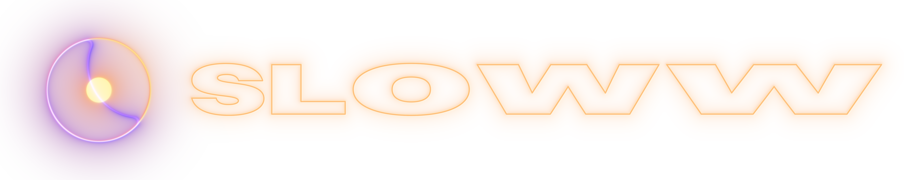
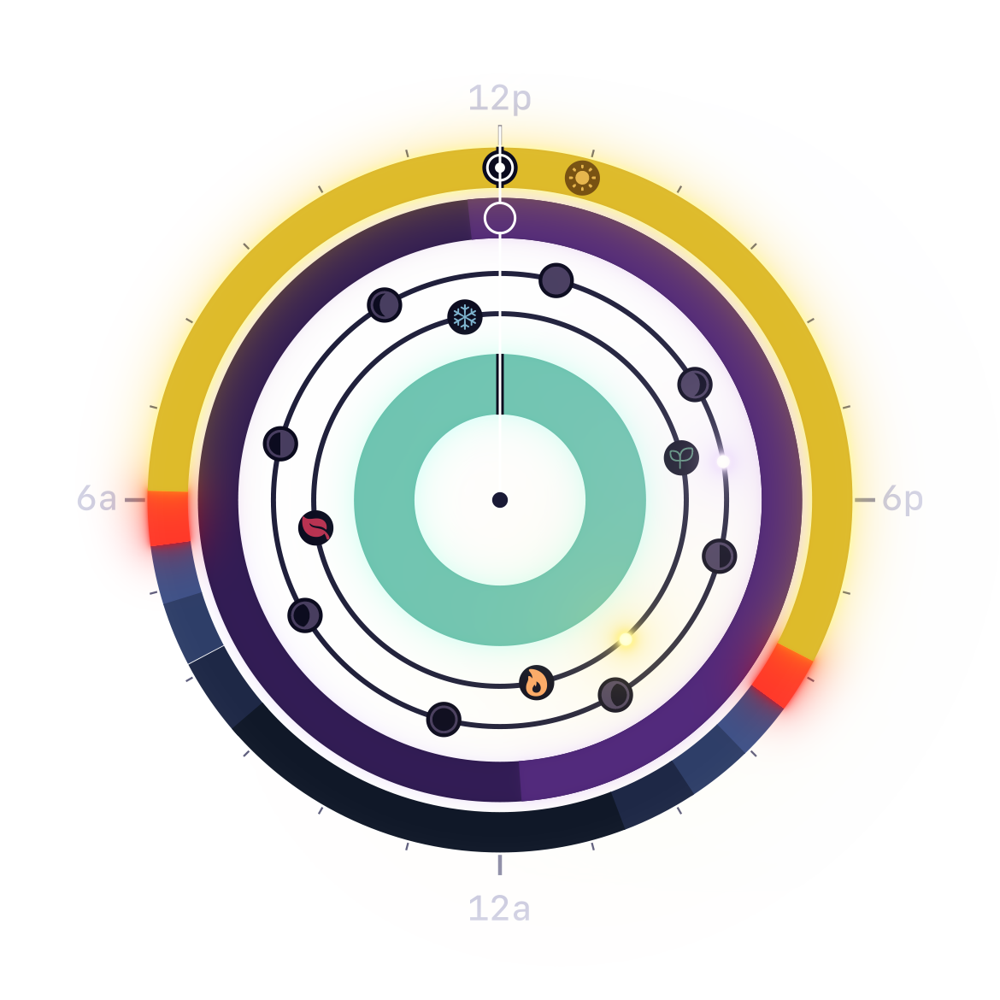

Your day has a shape
A contemplative 24-hour clock
that shows where you are in the day.
Sun arcs, twilight bands, moon phases.
No suggestions. No coaching. Just the sky.
A clock, not a planner. A window, not a dashboard.
The Sun Ring
The sun's arc across your day, from first light through golden hour to last twilight. It stretches through summer, shrinks in winter, and never looks the same two days in a row.
Dawn & Dusk
Three twilight stages (astronomical, nautical, civil) rendered as color, not data. Sunset isn't a timestamp. It's a slow, beautiful fade you can see.
The Moon Ring
An inner ring shows the moon's position in your sky, and the icon updates with tonight's phase: full, crescent, new.
Lunar Cycle & Seasons
Delicate inner rings show the 29.5-day lunar cycle and where you are between solstices. You won't read a number, you'll see how far the year has turned.
Breathing
The innermost ring pulses with your breath. Four patterns (box breathing, coherent, 4-7-8, extended exhale) sit at the center of the clock, waiting when you need them.
Any Place on Earth
Search any city or enter coordinates and save your favorites. Everything is computed on your device, and no location data ever leaves your phone.
Six rings. One clock.
Each ring reveals a different rhythm. Toggle them to show everything, or just what matters right now.
Everything is computed on your device from your location. No accounts, no internet connection, and no opinion about what you should do with your day.
All the time you need
$4.99. One-time purchase. No subscriptions. No ads. No accounts. Ever.